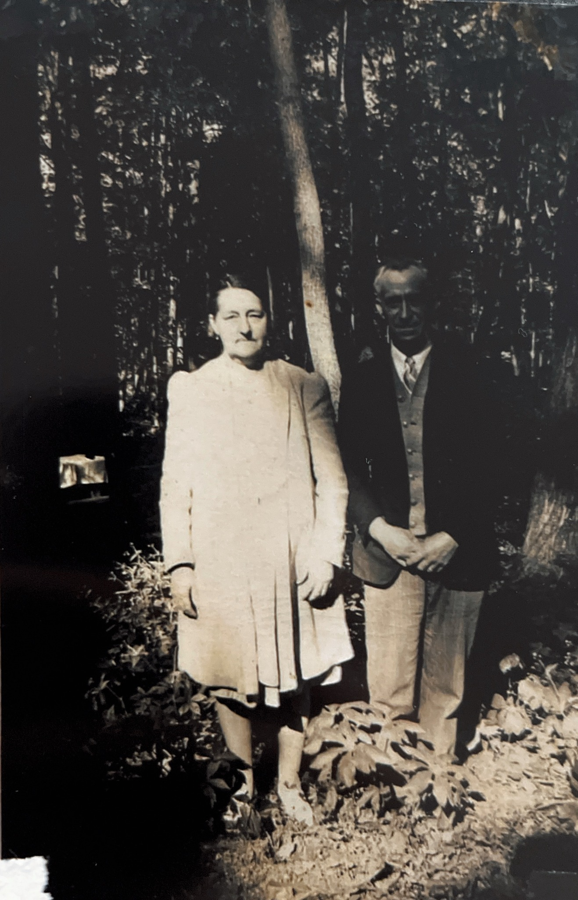
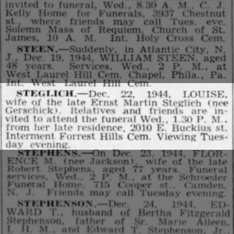

I knew that Louisa Maria Gierschick had been born on 7 December 1873 in Schönheiderhammer, Saxony. I even had documents passed down by a relative that confirmed the place she came from. Yet, despite repeated searching, I could not find an online birth or baptism record for her.
The problem: an exact date and place, but no online record
This was not a case where the family story was vague. I had a precise date, a precise place and later records that were consistent with Louisa's German origins. What I did not have was the record that should have anchored her to her parents and early family.
Searching online under Gierschick and spelling variants did not solve it. Eventually, the most sensible next step was to stop assuming that the record had been digitised and contact the place most likely to hold it.
Going directly to the church
I contacted a church in Schönheiderhammer and asked whether its records contained an entry for Louisa. The reply was encouraging but required patience: I was told there would be a wait of roughly six months.
I waited. Eventually the church came back with a transcript of the relevant entries. I did not receive an image of the original baptismal certificate, but the transcript supplied the information I had been unable to find anywhere online.
The baptismal entry that unlocked the family
The church identified the entry as baptism book 1873/129, no. 270. The transcript recorded:
The spelling “Marie Luise” rather than the later “Louisa Maria” is not unusual in family research, where given names can shift in order, language and form across countries and records. More importantly, the entry named both parents and gave their religious affiliations and occupations or family background.
The transcript also used the Latin term deflorata, translated in the church's letter as “deflowered”, in connection with Ernestine. Together with the explicit description of the child as illegitimate, the wording leaves little doubt that Louisa was born before her parents married.
A Lutheran mother and a Catholic father
Louisa's mother, Ernestine Pauline Fischbach, was Evangelical Lutheran. Her father, Wilhelm Anton Gierschick, was Catholic. The combination of an illegitimate birth and parents from different confessions may well have carried social consequences in a nineteenth-century community, although the surviving transcript cannot tell us how their families or neighbours actually reacted.
What the church records do show is that the relationship continued. Wilhelm and Ernestine married in Schönheide on 11 October 1874, only about ten months after Louisa's birth. The transcript describes the ceremony as being conducted “in silence”. I have kept that wording as given in the translation rather than trying to force a modern interpretation onto it.
The marriage and Louisa's younger siblings
The marriage entry described Wilhelm Anton Gierschick as a 27-year-old tailor in Schönheiderhammer and Ernestine Pauline Fischbach as 20. The church letter went on to identify two younger children:
- Alfred Anton Gierschick, born 26 December 1875. His baptismal entry noted that his father, formerly a tailor, was then an ironworker in Schönheiderhammer. Alfred died on 5 February 1916.
- Olga Helene Gierschick, born 16 February 1879. A baptismal certificate was issued for her in 1885, but the church could find no later trace of her.
My wider family research indicates that Wilhelm and Ernestine had at least one further child, but the church response itself specifically named Alfred and Olga.
The same letter also supplied Ernestine's death entry: she had been born on 3 April 1854 in Auerbach in the Vogtland and died at Schönheiderhammer on 23 April 1919, aged 65, from gallbladder cancer. She was recorded as the wife of Wilhelm Anton Gierschick, an ironworks worker.
The family story that Louisa was a twin
There was still one piece of family lore I hoped the church record might answer. My grandmother, who was herself a twin, always said that her grandmother Louisa had also been a twin.
The transcript I received does not prove that. It names Marie Luise alone and describes her as the first illegitimate child. I have found no surviving record for a twin.
That does not make the family story impossible. A twin could conceivably have been stillborn, died during or shortly after birth, been recorded elsewhere, or have a record that no longer survives. At present, however, all of those are possibilities rather than evidence. The twin story remains an open question.
Following Louisa to Philadelphia
Louisa later emigrated to the United States and married Ernst Martin Steglich. A family photograph has also survived, giving the documentary trail a rare personal dimension.

Louisa's Philadelphia obituary provides a useful endpoint for the story, recording her death on 22 December 1944 and identifying her as the wife of the late Ernst Martin Steglich.

What the church letter changed
Before the enquiry, I had a birth date and place but no primary church evidence connecting Louisa to her parents. After waiting for the parish response, I had a much fuller family picture:
- Louisa's baptism could be placed precisely in Schönheiderhammer in December 1873.
- Her parents were identified as Wilhelm Anton Gierschick and Ernestine Pauline Fischbach.
- The entry explicitly recorded that Louisa was born out of wedlock.
- The parents' different religious confessions were documented: Catholic and Evangelical Lutheran.
- Their marriage the following year showed that the relationship continued after Louisa's birth.
- The church letter supplied younger siblings and Ernestine's later death record, opening several new lines of research.
What this case demonstrates
This is a simple but important reminder that “not online” does not mean “does not exist”.
- Exact information can still lead to a brick wall. Even a precise date and place are not enough if the relevant register has not been digitised or indexed.
- Local record custodians matter. A direct enquiry to the church produced information that years of online searching had not.
- Patience is part of genealogy. The six-month wait was worth it because the response answered the central question and created several new ones.
- One record can reveal far more than a date. The baptismal transcript gave parentage, legitimacy, religion, occupation and geographic clues.
- Family stories need to remain hypotheses until the records support them. Louisa may have been a twin, but the evidence I have so far does not prove it.
Where I would take the research next
The church itself suggested contacting the Schönheide municipal registry for more information about Wilhelm Anton Gierschick, who was not born in Schönheide and was not found in the local death book. The letter also connected the Gierschick family with Hirschenstand, identified there as present-day Jelení in the municipality of Nové Hamry in the Czech Republic.
A particularly useful next step would be to obtain an image of the original 1873 baptismal entry and inspect the surrounding entries and relevant burial records for any trace of a second child born at the same time. That would be the strongest documentary route for testing the twin story rather than relying on family tradition alone.
Have an ancestor whose record is not online?
Some of the most useful family-history records still sit in parish registers, local archives, civil registry offices and other collections that cannot be searched with a name box. When the online trail stops, the next step is often identifying who holds the original records and asking the right question.
If you have an ancestor whose birth, baptism, marriage or parentage cannot be found online, you are welcome to send me an enquiry. I can review what you already know and help identify the most useful documentary route forward.